Elite Screens Application Overview
Elite Screens is a mobile and tablet-optimized Power Apps Canvas Application designed for field workers, engineers, and supervisors. It enables swift, on-site operations for logging maintenance jobs, safety inspections, cleaning tasks, meter readings, and raising work requests.
The system comprises three major components:
- Canvas Mobile App (Power Apps): The front-end interface used by field operators, engineered to work seamlessly in **Offline Mode**.
- Dynamics CRM (Model-Driven App - "Elite Site Operations"): Used by supervisors and administrators to manage permissions, translate menus, track logs, and verify work.
- Dataverse Database: Serves as the primary data repository, integrating tables and relationships.
Environments Directory
Development and user testing are partitioned across specific instances:
| Environment | Model-Driven CRM URL | Canvas App URL |
|---|---|---|
| Development (DEV) | eliteappsdev.crm11.dynamics.com | PowerApps DEV Workspace |
| Testing (UAT) | development4-uat.crm11.dynamics.com | PowerApps UAT Workspace |
Data Integration & Write-Back Rules
A crucial technical design choice of the Elite Screens ecosystem is the integration with **Microsoft Dynamics 365 Business Central (BC)**. Understanding this data flow is key for any developer modifying the codebase.
Most master tables and core operational lists are synchronized unidirectionally from Business Central. The mobile app cannot insert, modify, or delete records in these tables. They are strictly **Read-Only** from the front-end:
- Master Entities:
Parks,Plots,Units, andUnit Fields. - Core Configurations:
Request Types,Reason Codes, andJob Statuses. - Primary 7 Tables:
Site Tasks,Safety Tests,Maintenance Jobs,Services_1,Housekeeping_1,Meter Readings, andInspections.
The mobile user is only authorized to write data to a subset of transactional tables. These are the **only** tables patched or collected from the front-end:
- Comments: Attached to records for feedback.
- Requests: Submitted incidents, work orders, or quotes.
- Time Entries: Logged durations representing engineering labor.
Among these tables, only Time Entries trigger calculation logic inside the app to measure actual work duration.
%20(More%20Info).png)
Application Initialization
When the application launches, the root OnStart script in 1.App.txt runs, configuring default themes, menu options, user profiles, translations, and permission lists.
App Theme & Fonts Loading
A global design system configuration variable (EliteTheme) is instantiated. It defines color models and sizes. It dynamically sets size values based on the physical device screen category to ensure font scaling:
Set(
EliteTheme,
With(
{
BaseNormal: 25,
BaseHeading: 40,
BaseCaption: 15
},
{
FontSizes: {
Body: [
{ ScreenSize: ScreenSize.Small, FontSize: BaseNormal },
{ ScreenSize: ScreenSize.Medium, FontSize: BaseNormal + 10 },
{ ScreenSize: ScreenSize.Large, FontSize: BaseNormal + 20 },
{ ScreenSize: ScreenSize.ExtraLarge, FontSize: BaseNormal + 30 }
],
Heading: [
{ ScreenSize: ScreenSize.Small, FontSize: BaseHeading },
{ ScreenSize: ScreenSize.Medium, FontSize: BaseHeading + 15 },
{ ScreenSize: ScreenSize.Large, FontSize: BaseHeading + 30 },
{ ScreenSize: ScreenSize.ExtraLarge, FontSize: BaseHeading + 45 }
]
},
Colors: {
Body_UI: {
Primary: ColorValue("#008D84"),
Secondary: ColorValue("#014F78"),
White: ColorValue("#FFFFFF"),
BackgroundLight: ColorValue("#F6FCFF"),
TextPrimary: ColorValue("#1C1C1C")
}
}
}
)
);
Why this logic was used:
- Device Responsiveness: Setting font sizes inside an array of screen sizes allows individual text labels on the screens to easily bind their
Sizeproperty (e.g.LookUp(EliteTheme.FontSizes.Heading, ScreenSize = Screen.Size).FontSize). This prevents overlapping text on small mobile screens. - Maintainability: Declaring standard colors inside
EliteTheme.Colorsensures that developers do not hardcode colors on individual components. If the corporate brand colors change, updating a single property inApp.OnStartupdates the entire application's UI.
Variables Reference Guide
Below is a dictionary of all global variables (initialized with Set) and context variables (initialized with UpdateContext) used across the application screens.
Global Variables (Global Scope)
| Variable Name | Data Type | Description |
|---|---|---|
EliteTheme |
Record | Holds the global UI stylesheet definition, containing responsive font size arrays and hex color strings. |
MenuList |
Table / Collection | Static array defining menu tiles (Name, Image, Background color, text color, and target menu keys). |
MenuFilteredFromPermission |
Table / Collection | Filtered version of MenuList matching user-authorized menu keys. Displays tiles dynamically. |
LabelTranslations |
Table / Collection | Nested JSON translations table containing dynamic localizations compiled on app startup. |
CurrentUser |
Record | Stores user record details (User GUID, Primary Email, Name) retrieved from Dataverse table on start. |
UserLanguage |
String | Active UI language key (defaults to "English"). Modifies translated lookups. |
SelectedMenu |
Record | Stores the selected module card (e.g. Site Tasks) clicked on the Home screen to filter dashboard metrics. |
NoMenuWarningLabel |
String | Stores a localized warning label string displayed if user authorization lists are empty. |
Context Variables (Screen-Specific Scope)
| Variable Name | Screens Used | Description |
|---|---|---|
IsHomeScreenLoaderVisible |
Home | Controls visibility of loading screens during start permissions/translations fetching. |
IsHomeSelectionOptionsVisible |
Home | Toggles display of the quick actions slide-out side menu. |
IslanguageOptionSelection |
Home | Toggles visibility of the language selector overlay. |
CurrentRecord |
Maintenance (List), Detail Screens | Stores the unique GUID ID of the record selected in the list gallery. Used to populate detail views. |
CurrentMaintanenceRecord |
Detail Screens | Stores the resolved Dataverse record loaded via a LookUp matching CurrentRecord. |
IsTimerStart |
Detail Screens (Jobs, Services, Housekeeping) | Flags whether the work timer is running (switches buttons and runs millisecond counters). |
TimerDefaultValue |
Detail Screens (Jobs, Services, Housekeeping) | Accumulated time entries duration in milliseconds. Used to set the initial timer starting value. |
CanAccessStart, CanAccessPause |
Detail Screens (Jobs, Services, Housekeeping) | Toggles button availability based on the active timer session status reason. |
IsVisibleTaskPopupForm |
Details, Task List Screen | Toggles visibility of the task checklist creation overlay. |
IsVisibleConfirmPopupForm |
Detail Screens | Controls popups prompting the user before complete/status update actions. |
Security & Permissions Management
To secure access to operation files and tools, the application evaluates user groups and permission logs on startup. Rather than relying on simple client-side checks, it runs a background Power Automate flow to retrieve allowed menu keys.
Role Permission Script
The initialization code runs a Power Automate flow and loads allowed screens based on the current user's email address:
ClearCollect(
colMenusRaw,
ForAll(
ParseJSON(
'PowerAppV2->Listrows'.Run(
LookUp(Users, 'Primary Email' = User().Email).User
).permissiondata
),
{ menuid: Text(ThisRecord.elt_menukey) }
)
);
ClearCollect(
colTeamIds,
ForAll(
ParseJSON(
FindTeamsOfUser.Run(
LookUp(Users, 'Primary Email' = User().Email).User
).jsonresult
),
{ TeamId: GUID(ThisRecord.teamid) }
)
);
ClearCollect(
UserTeams,
Filter(Teams, Team in colTeamIds.TeamId)
);
Why this logic was used & Integration Specification:
- Dataverse Relationship (N-to-N): The permission flow queries a custom Dataverse table named menu, which has an N-to-N relationship with the systemuser table. This relationship model allows assigning multiple modules to multiple users securely.
- Flow Trigger: The flow accepts the current user's GUID and queries the intersecting relationship tables on the server side, returning a serialized JSON list of authorized menu keys (e.g.
APP_TILE_SITE_TASK). This minimizes client-side query complexity and secures internal database queries. - Team Context Loading: The `FindTeamsOfUser` flow returns the GUIDs of all operational teams the user belongs to. Storing this inside the local collection `UserTeams` is critical for filtering transactional logs on subsequent pages (letting workers view team tasks or toggle to their personal view).
.png)
.png)
Localization & Dynamic Translation
The application supports globalization by utilizing a dynamic translations database. All text labels, alerts, and notifications on every screen reference a single localization model, allowing rapid changes across different language settings.
Label Translations Fetch Code
ClearCollect(
LabelTranslations,
ForAll(
Filter(Languages, Status = 'Status (Languages)'.Active) As l,
{
Language : l.Name,
TranslatedLabels : ParseJSON("{"&Concat(Filter(Translations,ThisRecord.Language.Language = l.Language, ThisRecord.Status = 'Status (Translations)'.Active),JSON(
Key,
JSONFormat.IgnoreUnsupportedTypes
) & ":" & JSON(
Value,
JSONFormat.IgnoreUnsupportedTypes
),
",")&"}")
}
)
);
Why this logic was used:
- Performance Optimization: Compiling translations into a single nested JSON object per active language allows quick lookup operations. By executing `ParseJSON` on startup, individual screen elements can resolve translations instantly using a formula like:
Coalesce(Text(LookUp(LabelTranslations, Language = UserLanguage).TranslatedLabels.lblHome), "Home") - Concatenation Loop: Power Apps lacks native dynamic dictionary map initializers. Concatenating key-value columns from the translations database into a single string (formatted as
{"key":"value","key2":"value2"}) and wrapping it with `ParseJSON` is a highly creative workaround to create a lightning-fast memory dictionary.
Home Screen Breakdown
The Home Screen serves as the central hub. It provides quick access to individual inspection and services logs while displaying the logged-in user profile.
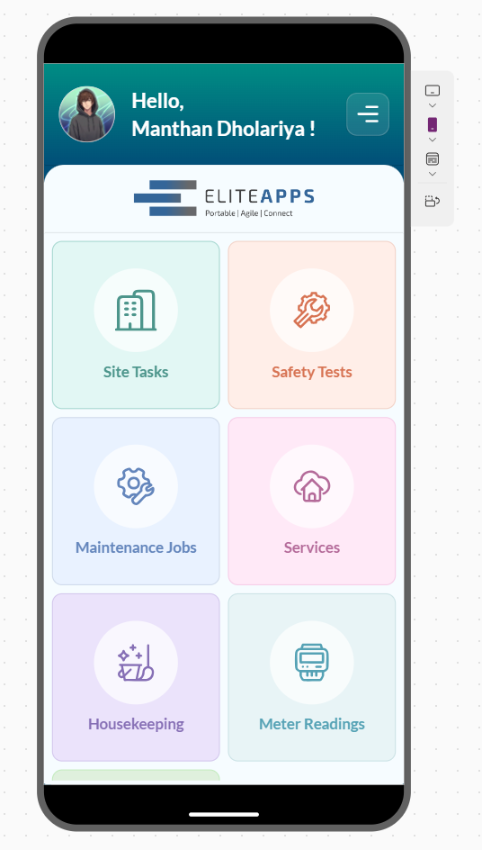
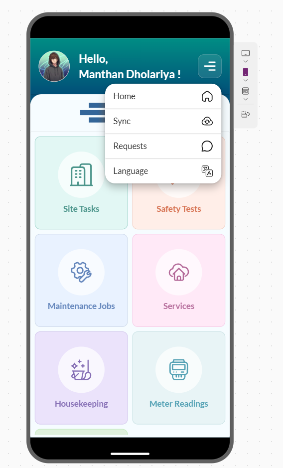
Key Capabilities & Interactivity Details
The Home page acts as the main entry portal. When a user lands here, the following mechanisms are active:
- User Details: Retrieves
User().FullNameandUser().Image. It renders a friendly greeting and profile picture. - RBAC Checked Menus: The central gallery (
MainMenuGallery) binds to the collectionMenuFilteredFromPermission. If a user doesn't have permissions for any menus, it renders theNoMenuWarningLabel(e.g., "You don't have any menu permissions.") and hides the gallery. - Hamburger Option Menu: Tapping the hamburger button on the top-right opens the quick actions panel (setting
IsHomeSelectionOptionsVisible = true). It contains four options:- Home: Standard redirection.
- Sync: Forces an offline cache synchronization (calls `ShowHostInfo(HostInfo.OfflineSync)`).
- Requests: Navigates to the Requests Screen for logging user issues.
- Language: Activates a language overlay (setting `IslanguageOptionSelection = true`) which lists active languages. Tapping a language updates `UserLanguage`, changing translated text labels.
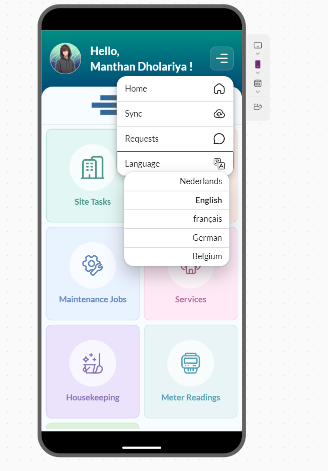
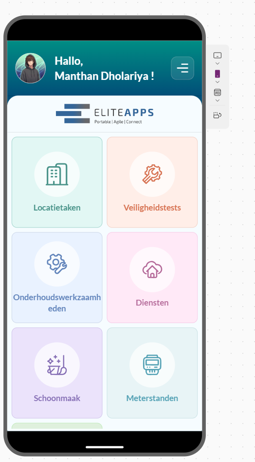
Task Dashboard Screen
The Task Dashboard Screen displays a summary of tasks for the selected module. It allows managers and workers to quickly see what is pending, what is high-priority, and what is already completed.
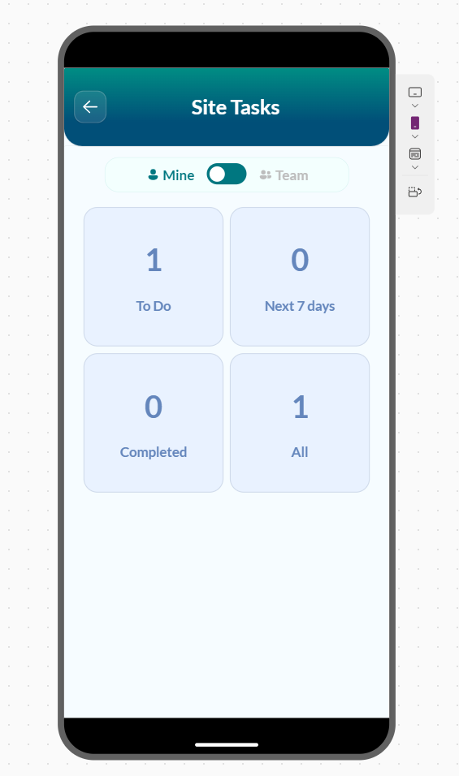
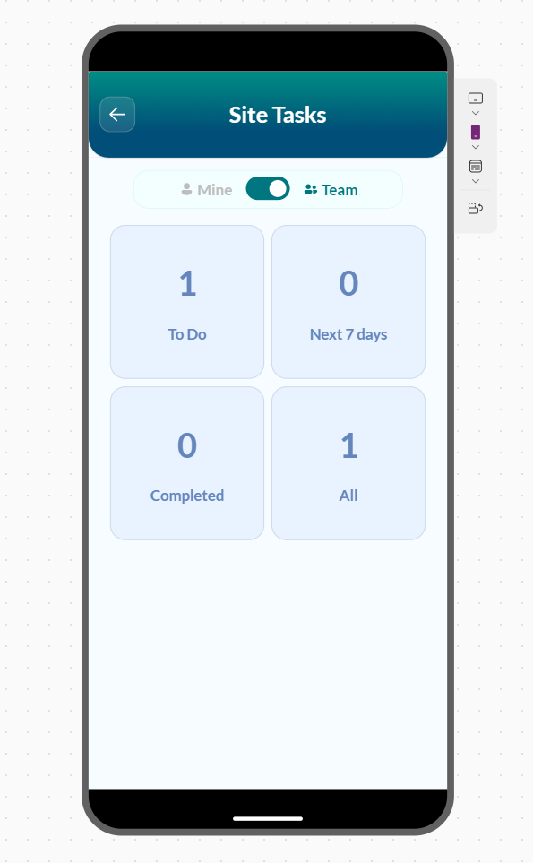
Technical Counting & State Specifications
The dashboard renders 5 primary filter cards. Each card computes task counts dynamically based on the chosen module (e.g. Services, Housekeeping):
| Card Name | Filter Definition & Business Logic |
|---|---|
| High Priority | Counts uncompleted active tasks where Priority = 1 and Task Status <> 4 (Not Completed). Note: This card is visually rendered only when Maintenance Jobs is selected. |
| To Do | Counts uncompleted tasks whose due date (or test date, start date depending on module) is on or before 11:59:59 PM of the current date (today). Formula matches: 'Due Date' <= DateAdd(Today(), 86399, TimeUnit.Seconds). |
| Next 7 days | Counts active tasks due within the upcoming week: starting tomorrow up to 7 calendar days out. |
| Completed | Counts all tasks where status code equals 4 (Completed). |
| All | Counts all active uncompleted tasks (excluding completed tasks). |
Mine vs Team Toggle: Toggling TaskDashboard_TaskFilter_Toggle shifts queries. If enabled (Team mode), the database is filtered against the user's groups ('Owning Team'.Team in UserTeams.Team). If disabled (Mine mode), it filters directly against the user GUID ('Owning User'.User = CurrentUser.User).
Polymorphic Gallery & Listing Screen
The MaintenanceScreen serves as a master-list browser. What makes it technically interesting is that rather than having separate listing controls or screens for each operational module, it uses a **single polymorphic gallery** mapping different tables into a unified schema.
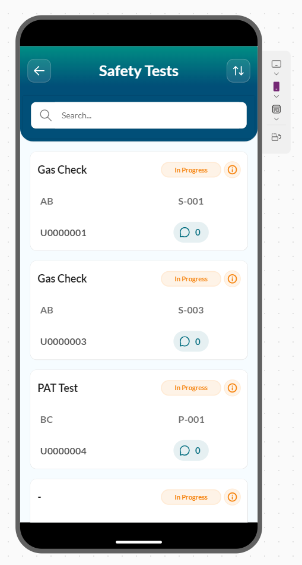
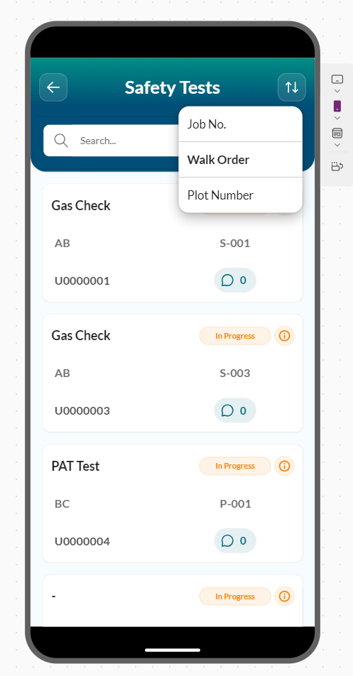
Technical Details: Sorting and Searching
The Listing page is highly interactive and provides three main developer mechanics:
- Text Keywords Search: Type inputs in
TextInputCanvas3filter list rows dynamically. The search runs on multiple fields: description, park code, plot number, and unit number:Filter(..., TextInputCanvas3.Value in elt_description || TextInputCanvas3.Value in elt_Park.'Park Code' || TextInputCanvas3.Value in elt_Plot.'Plot No' || TextInputCanvas3.Value in elt_Unit.'Unit No') - Sorting Controls: Tapping the sort options button opens a drop-down allowing ordering by:
- Job No: Orders alphabetically by the job key.
- Walk Order: Orders by the geographic walk order sequence mapped on Dataverse Plots.
- Plot Number: Orders numerically by the plot identifier.
- No Records Toast Message: If the resolved items query returns empty, a toast dialog notification is displayed on screen stating there are no tasks matching the filter.
Polymorphic Data Binding Specification
To load the gallery dynamically without duplicating screens, the Items property uses a formula that appends matching virtual column headers to all tables using AddColumns. This shapes them into a single schema for the gallery bindings:
Items: |-
Switch(
SelectedMenu.Name,
"Maintenance Jobs",
Sort(
If(TaskDashboard_TaskFilter_Toggle.Value,
Switch(Filter,
"High Priority", AddColumns(Filter('Maintenance Jobs', !IsBlank('Maintenance Job') && Status='Status (Maintenance Jobs)'.Active && 'Owning Team'.Team in UserTeams.Team && Priority=1 && 'Task Status'<>4), 'JobNO', 'Job No.', 'TaskStatus', 'Task Status', 'TaskDescription', Description, 'Park Code', Park.'Park Code', 'Plot No', Plot.'Plot No', 'Unit No', Unit.'Unit No', 'Priority Custom', Priority, 'ID', 'Maintenance Job'),
"Completed", AddColumns(Filter('Maintenance Jobs', 'Task Status'=4 && Status='Status (Maintenance Jobs)'.Active && 'Owning Team'.Team in UserTeams.Team), 'JobNO', 'Job No.', 'TaskStatus', 'Task Status', 'TaskDescription', Description, 'Park Code', Park.'Park Code', 'Plot No', Plot.'Plot No', 'Unit No', Unit.'Unit No', 'Priority Custom', Priority, 'ID', 'Maintenance Job'),
/* Default fallback */
AddColumns(Filter('Maintenance Jobs', !IsBlank('Maintenance Job') && 'Task Status'<>4 && Status='Status (Maintenance Jobs)'.Active && 'Owning Team'.Team in UserTeams.Team), 'JobNO', 'Job No.', 'TaskStatus', 'Task Status', 'TaskDescription', Description, 'Park Code', Park.'Park Code', 'Plot No', Plot.'Plot No', 'Unit No', Unit.'Unit No', 'Priority Custom', Priority, 'ID', 'Maintenance Job')
)
),
'Job No.', SortOrder.Ascending
),
"Services",
Sort(
/* Similar schema normalization but maps services table columns to the same virtual fields */
AddColumns(Filter(Services_1, ...), 'JobNO', 'Job No.', 'TaskStatus', 'Task Status', 'TaskDescription', Description, ...)
)
)
Why this logic was used:
- Avoid Local Collection Delegation Limits: Intermediate local collections (like `ClearCollect`) have a strict delegation limit in Power Apps (max 2,000 rows). Feeding database tables directly into the gallery
Itemsusing `AddColumns` preserves **direct server delegation**. Dataverse handles paging and filtering on the server, allowing the app to process millions of records cleanly. - Prevents Application Bloat: Without this pattern, developers would have to build 7 different listing screens or hide/show 7 separate galleries. That would slow down the app, increase memory consumption, and double the size of exported YAML files. Normalizing the columns dynamically lets one gallery handle all 7 tables.
Site Tasks Detail Screen
Displays all details related to site tasks. Field workers use this to review requirements, access action logs, or submit status updates.
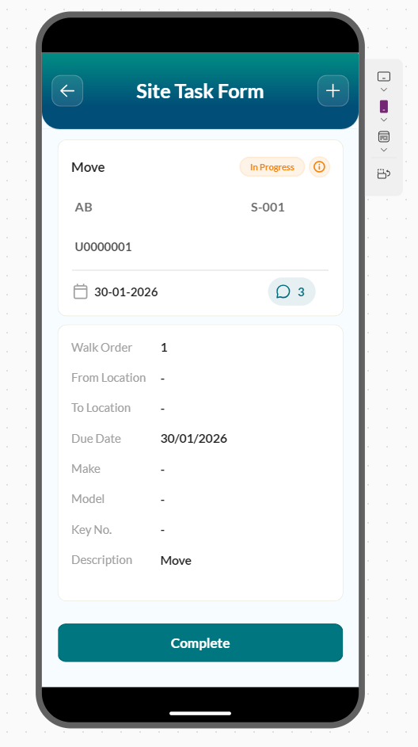
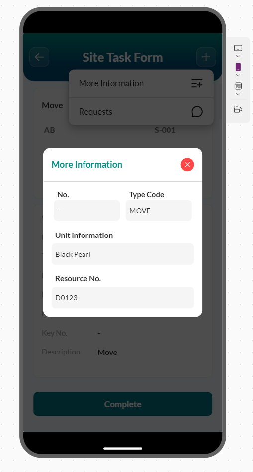
Options & Action Menus Details
The Site Tasks detail page enables reviewing tasks and modifying statuses:
- Operational Fields: Renders fields including Location Code, Priority rating, Target Date, and Description. Permission to enter is displayed as a read-only field synced from Dataverse.
- Complete Task Popup: Clicking the complete action button triggers `IsVisibleConfirmPopupForm = true`. Confirming patches the site task status to Completed. A success toast message appears confirming completion.
- Option Panel: Tapping the option button in the header triggers a slide-up panel offering:
- More Information: Opens an information overlay outlining task requirements.
- Add Request: Direct link to log a service request regarding this site task.
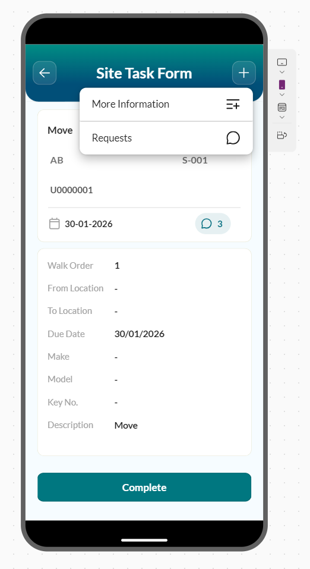

Safety Tests Detail Screen
Used to verify equipment safety compliance. Displays checklist procedures, compliance dates, inspector metadata, and safety certificates.
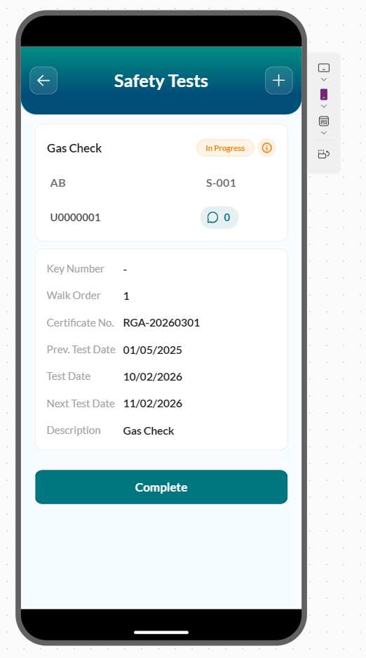
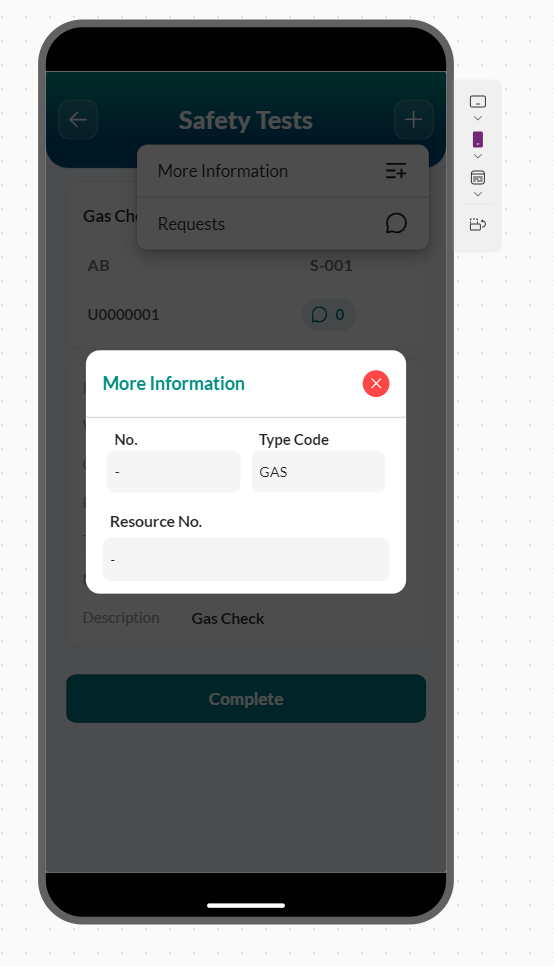
Operational Walkthrough
Operators verify equipment safety benchmarks using this layout:
- Compliance Fields: Displays Test Date, Certificate Details, Next Due Date, and Status badges.
- Verification Completion: The Complete button opens a confirmation popup. When updated, the safety test status is patched to Complete and a success checkmark toast notification is rendered.
Maintenance Jobs Detail Screen
This screen is designed to manage work orders and log engineering labor hours. It includes a built-in time-entry logging system.
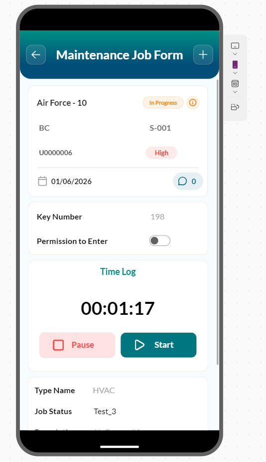
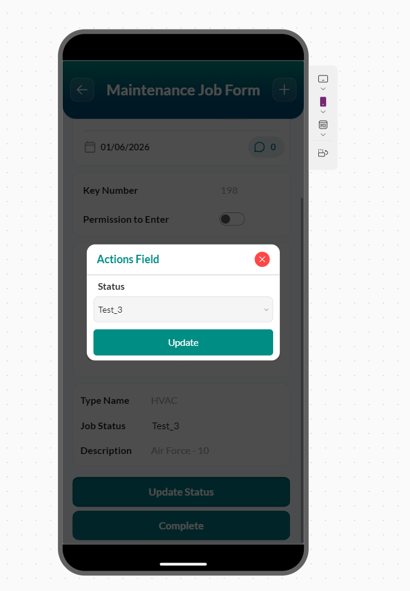
Operational Walkthrough & Time Entries Calculations
Field engineers interact with maintenance tickets by reviewing instructions and logging hours:
- Labor Hours Logging (Calculated Time Entries): Time tracking creates records in the
Time Entriestable. When the user starts the timer, a record is added withStatus Reason = CurrentandStart Time = Now(). Pausing the timer patches that record, setting `End Time` to `Now()` and status to `Past`. - Job Status Configuration: The Status dropdown options populate from the
Job Statusestable (filtered to show only active statuses mapped to Maintenance Jobs). Selecting a status and tapping Update modifies the job's main status field.
Labor Hours Logging (Timer Logic)
When a worker begins the job, they start a timer. The application tracks active time logs and past durations using an SQL/Dataverse Time Entries table:
ClearCollect(
MaintenanceJobTimeEntries,
Filter('Time Entries', 'Maintenance Job'.'Maintenance Job' = CurrentMaintanenceRecord.'Maintenance Job')
);
UpdateContext({
TimerDefaultValue: Sum(
MaintenanceJobTimeEntries,
With(
{
_duration: If(
IsBlank('End Time'),
DateDiff('Start Time', Now(), TimeUnit.Milliseconds),
DateDiff('Start Time', 'End Time', TimeUnit.Milliseconds)-1000
)
},
_duration
)
)
});
Why this logic was used:
- State Persistence: If a user navigates away from the screen or closes the application, the timer state is preserved on the server. Summing the duration of all related
Time Entriesensures the correct accumulated time is rendered upon returning. - Accurate Logging: Subtracting 1000ms from ended logs compensates for transaction latency when communicating with the database.
Services Detail & Labor Tracking
The Service screen features dynamic time logging controls. These buttons perform write-backs directly to the Time Entries table to track on-site labor hours.
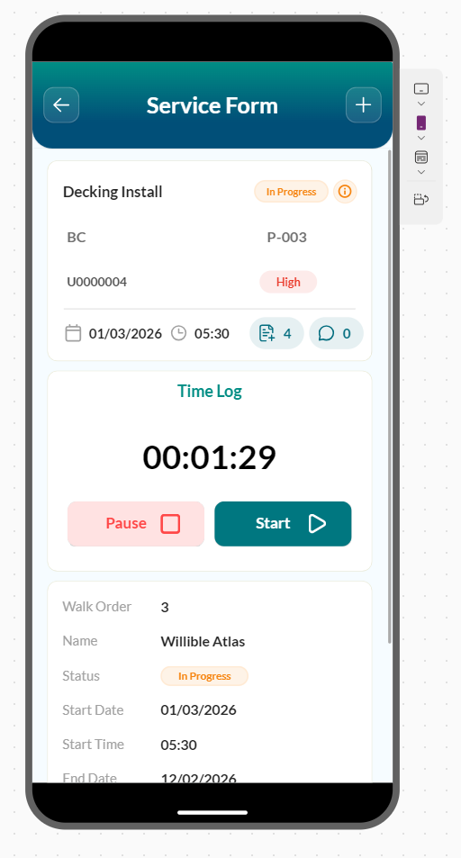
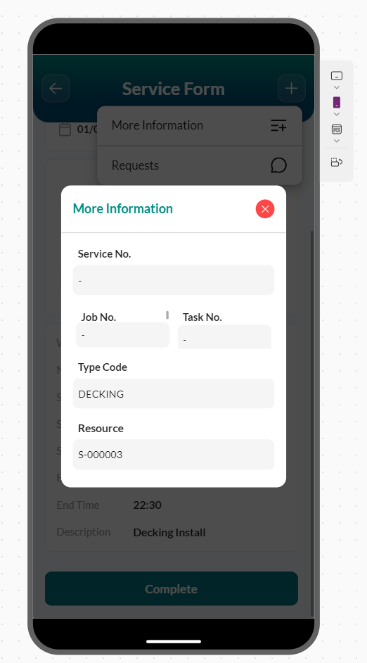
Operational Walkthrough
Service logs manage servicing checklists and hours:
- Sub-task Checklist Blockers: Tapping the Complete button is disabled unless the user has verified all sub-tasks in the checklist. Checking all checklist rows unlocks the Complete state.
- Timer State Controls: The UI disables/enables buttons using
CanAccessStart,CanAccessPause, andCanAccessCompleteto prevent conflicts (e.g. starting a timer that is already running).
Labor Log Calculations (Time Log Details)
The application tracks active, paused, and completed sessions. When a worker selects Start, it inserts a new running log. Pausing the timer writes back the End Time and computes the millisecond duration:
// OnSelect of TimeLog_Start_Button
If(
IsBlankOrError(CurrentMaintanenceRecord.'Actual Start Time'),
UpdateContext({IsTimerStart: true, varFirstStartTime: Now()});
Patch(
Services_1,
LookUp(Services_1, Service = CurrentMaintanenceRecord.Service),
{ 'Actual Start Time': varFirstStartTime, 'Actual End Time': Blank() }
);
Patch(
'Time Entries',
Defaults('Time Entries'),
{
Service: CurrentMaintanenceRecord,
'Start Time': varFirstStartTime,
'Status Reason': 'Status Reason (Time Entries)'.Current
}
);
UpdateContext({
CanAccessStart: false,
CanAccessPause: true
})
);
// OnSelect of TimeLog_Pause_Button
UpdateContext({IsTimerStart: false, varEndTime: Now()});
Patch(
'Time Entries',
LookUp(
'Time Entries',
Service.Service = CurrentMaintanenceRecord.Service && 'Status Reason' = 'Status Reason (Time Entries)'.Current
),
{
'End Time': varEndTime,
'Status Reason': 'Status Reason (Time Entries)'.Past
}
);
Technical Calculation Specifications:
- Start Timestamp: Triggers a new record in the
Time Entriesdatabase. It capturesStart Time = Now()and sets the status toCurrent. - Pause Write-Back: Locates the active time log record (where status reason is
Current) and updates it by addingEnd Time = Now()and resetting the status reason toPast. - Total Duration Calculation: When the screen loads, the timer initializes using the sum of millisecond differences:
Sum(colServiceTimeEntries, If('Status Reason' = 'Status (Time Entries)'.Past, DateDiff('Start Time', 'End Time', TimeUnit.Milliseconds), DateDiff('Start Time', Now(), TimeUnit.Milliseconds)))
Housekeeping Activity Screen
Tracks cleaning, safety walks, and compliance logs inside the facility. Integrates sub-task checklist controls.
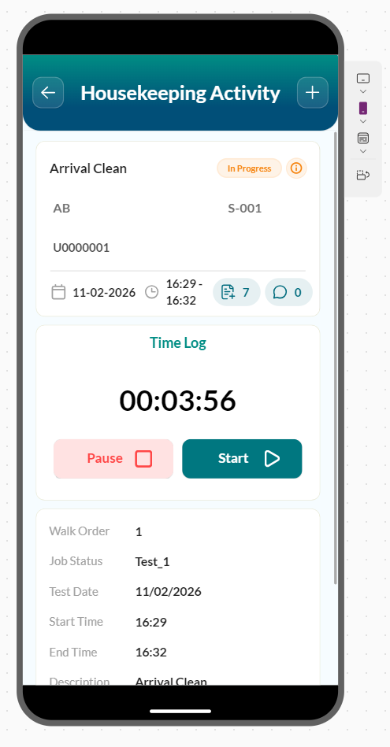
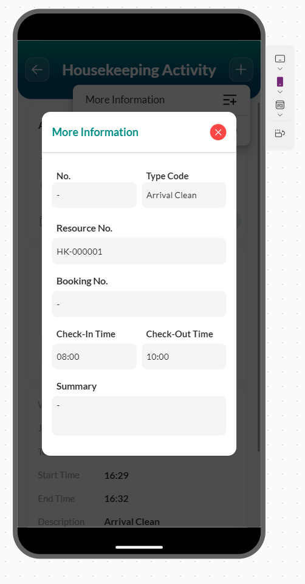
Operational & Technical Details
Housekeeping tasks track facility sanitation schedules:
- Checklist Blocking Rule: Just like in Services, operators must complete all checklist sub-tasks on the task list screen before clicking Complete.
- Timer Operations: Integrates the standard
colHousekeepingTimeEntriescollection, logging labor durations spent cleaning. It pulls available active status categories fromJob Statusestable (filtered by'Is Visible For Housekeeping?').
Meter Readings Detail Screen
Captures physical telemetry data. Field engineers record numeric values (e.g. pressure, running hours, power logs) which are validated on submission.
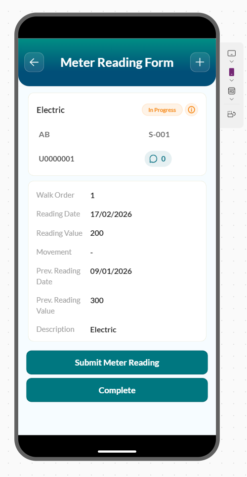
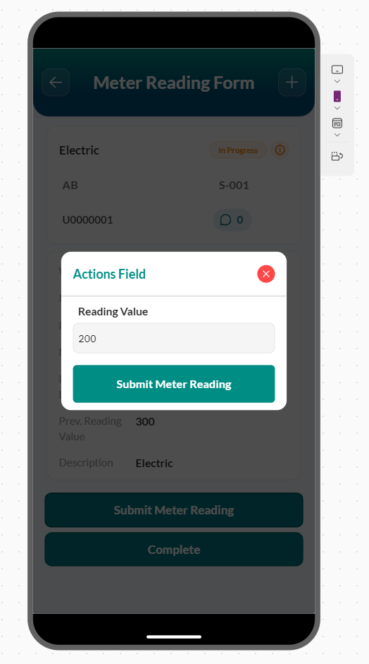
Validation & Submit Flow
Telemetry forms enforce strict data validation rules:
- Numeric Input Verification: The text input field checks if the value is non-blank and holds a valid number. Tapping Submit triggers validation: if empty, an error notification is shown requesting input.
- Success Flow: Confirming the submit modal updates the meter record, setting status to Complete, and triggering a success popup dialog.
Inspections Detail Screen
Facilitates equipment and facility inspection operations. Allows inspectors to verify mooring status, input reason codes, and swipe checklist tasks.
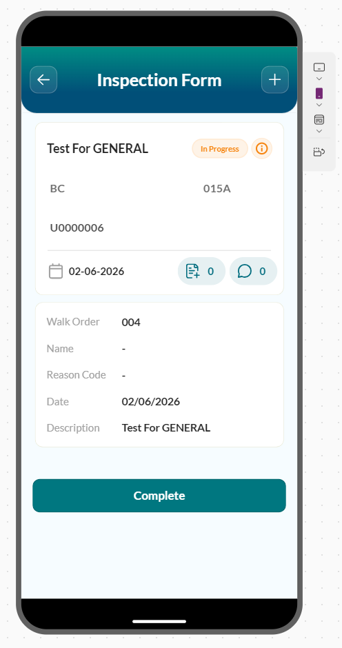
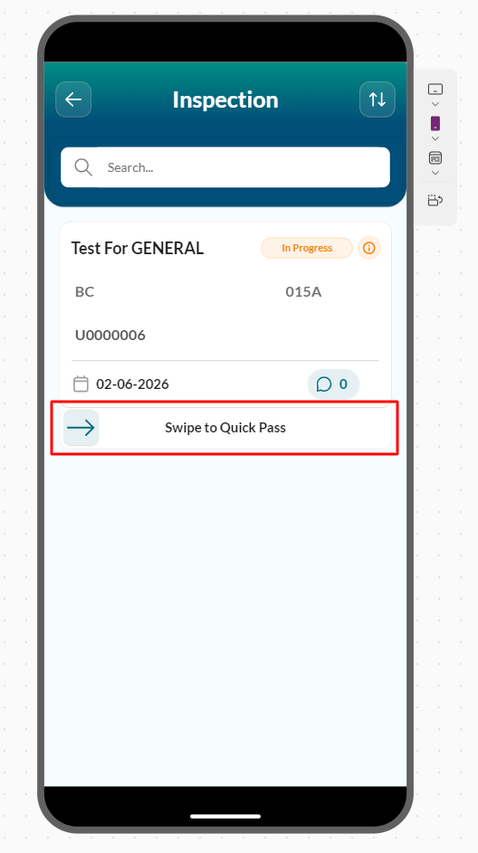
Key Features & SWIPE Gestures
Inspection details facilitate checks and quick passes:
- Mooring Status Dropdown: Configured as a choices field. It parses
Choices('Mooring Status (Inspections)'), which resolves to two options:INandOUT. - Reason Codes lookup: The list of reasons code available dynamically filters based on active inspection type code:
Filter('Reason Codes', 'Type Code' = CurrentMaintanenceRecord.'Type Code') - Quick Pass Swipe Action: A special contextual swiping gesture is active. Sweeping right on the inspection card immediately passes the inspection and marks the task as completed. This bypasses the checklist checks and forms, saving significant time for field workers verifying standard operational items.
Reason Code and Choice Filters
Choice properties are dynamically parsed on load. The screen fetches active mooring choices and filters reason codes by the inspection type code:
ClearCollect(
RequestOptionsetForMooringStatus,
{ Label: "--Select--", NumValue: Blank() }
);
ForAll(
Choices('Mooring Status (Inspections)'),
Collect(
RequestOptionsetForMooringStatus,
{ Label: Text(ThisRecord.Value), NumValue: ThisRecord.Value }
)
);
ClearCollect(
RequestOptionsetForReasonCode,
{ elt_name: "--Select--", elt_reasoncodeid: Blank() },
ShowColumns(
Filter('Reason Codes', 'Type Code' = CurrentMaintanenceRecord.'Type Code', Status = 'Status (Reason Codes)'.Active),
Name, 'Reason Code'
)
);
Why this logic was used:
- Dataverse choice sets: Choice values in Dataverse (such as Mooring Status) are loaded as key-value pairs (the display text vs. the backend integer index). The
ForAllcollection resolves both columns to populate custom drop-down selectors. - Default Selection Logic: The inspection screen links dynamically to a lookup table for reason codes. Until the user marks the records complete, they can change the reason codes multiple times. Filtering reason codes on startup based on the active record's
Type Codespeeds up forms by loading only related codes.
Shared Comments Screen
The Comments overlay provides a single, shared canvas for writing feedback, reading comments logs, and attaching photos. It automatically loads comments depending on which screen initiated the session.
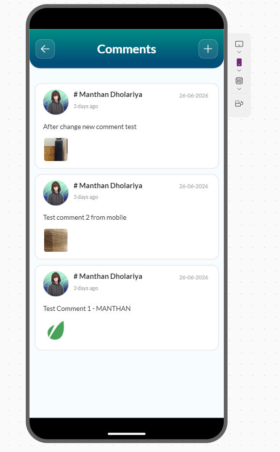
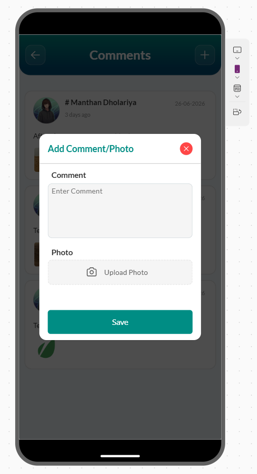
Operational Details
Comments are contextual and read-only once saved:
- Write-Once Constraint: Comments can only be created. To prevent unauthorized history editing in field reports, no edit or delete option is available.
- Database Mapping: Comments records are linked to the parent record using a regarding ID GUID column in Dataverse matching the active screen module (e.g.
elt_sitetaskidfor Site Tasks).
Context-Aware Filtering
On visible, the screen identifies the parent container using a switch and populates `FilteredComments`:
Switch(
SelectedMenu.Name,
"Site Tasks",
UpdateContext({FilteredComments : RecordofComments.elt_elt_comment_elt_sitetask_elt_RegardingId});
UpdateContext({CurrentRecord : LookUp('Site Tasks', 'Site Task' = RecordofComments.elt_sitetaskid)}),
"Services",
UpdateContext({FilteredComments : RecordofComments.elt_elt_comment_elt_service_elt_RegardingId});
UpdateContext({CurrentRecord : LookUp(Services_1, Service = RecordofComments.elt_serviceid)})
);
Requests Screen
Allows users to raise incident requests. It can be invoked globally from the Home screen or linked to a specific task.
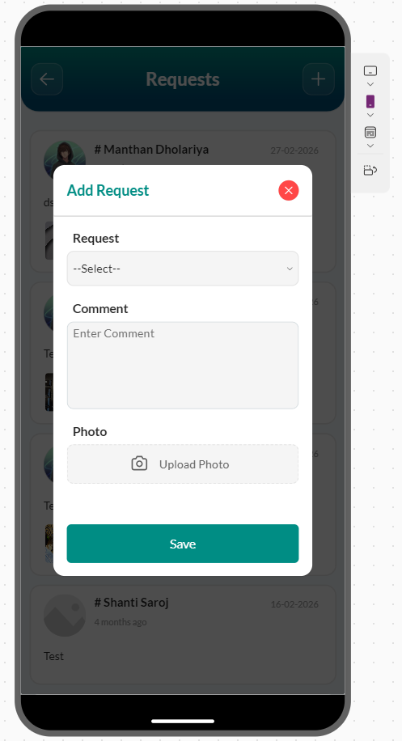
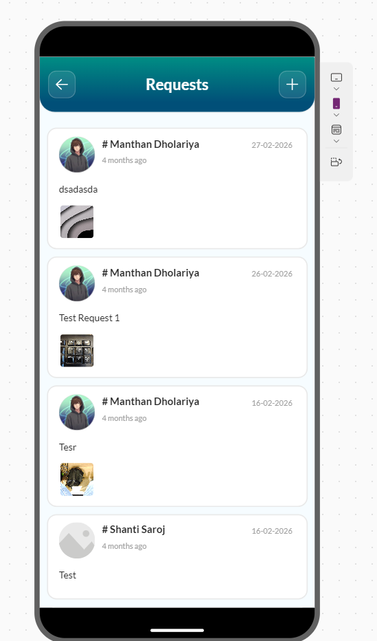
Operational Capabilities
Incident requests capture anomalies noted by field engineers:
- Redirection Contexts:
- From Home Page: Tapping Requests in the quick actions menu displays a list of all requests created by the current user. It filters out requests from other users.
- From Detail Page: Opening Requests from a task detail page displays only the requests associated with that specific record ID.
- Media Attachments: Users can capture and attach photos using the camera control. An upload size limit check is built-in; exceeding the upload limit renders an error toast message (e.g. "Upload limit exceeded").
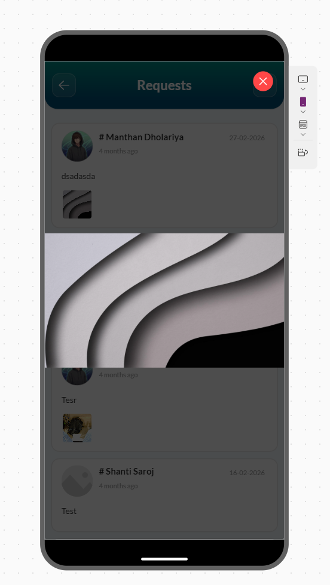
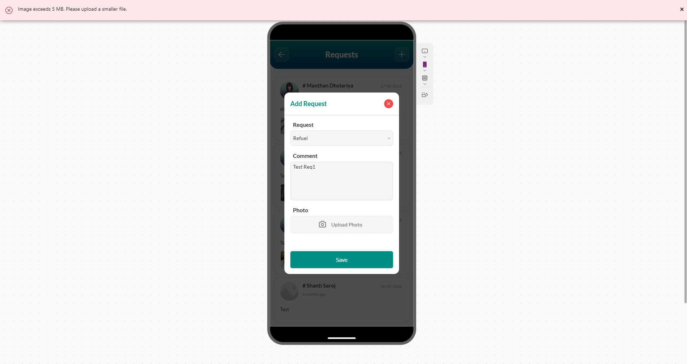
TaskList Checklist Screen
Used by Services, Housekeeping, and Inspections modules to show sub-tasks or step-by-step checklists that need verification before completing the job.
_list(for service,housekeeping and inspection).png)
To ensure high compliance standards, the application implements a checklist blocker rule: workers are prevented from marking a parent activity as completed unless all items in the sub-task Checklist (TaskList) are fully checked off.
The checklist items populate from the Task table filtered by the current record context (e.g. Filter(TasksData, Regarding = RecordOfTasks)).
Data Model & Table Schema
The application interacts with custom Microsoft Dataverse tables to synchronize tasks, log labor, and query localized configurations.
| Dataverse Table Name | Description / Key Usage |
|---|---|
menu |
Reference table defining the module keys. Mapped via N-to-N relationships to the systemuser table to determine UI visibility. |
Time Entries |
Transactional logging containing durations, Start Times, and End Times to capture labor hours. (Calculated Table) |
Languages & Translations |
Stores translation keys, values, and language settings to dynamically localize the application interface. |
Site Tasks |
Transactional data representing site tasks. Contains priority values and dates. |
Maintenance Jobs |
Operational records containing maintenance work orders, status logs, and time entries. |
Services_1 |
Service log data specifying tasks, durations, and active statuses. |
Housekeeping_1 |
Housekeeping logs representing sanitization and cleaning inspections. |
Meter Readings |
Saves metrics like readings value and date captured by operators. |
Inspections |
Contains equipment and mooring inspections, statuses, and links to checklists. |
Task |
Sub-tasks and checklists linked to parent services, housekeeping, or inspections. |
Comments |
Contains user annotations, descriptions, and linked image files. |
Clarifying Questions & Details
The table below summarizes the key architectural queries aligned with the developers' feedback:
Snapshot Requests & Verification
If any specific screenshots need to be added or modified, please list them below. When completed, mark them as done.